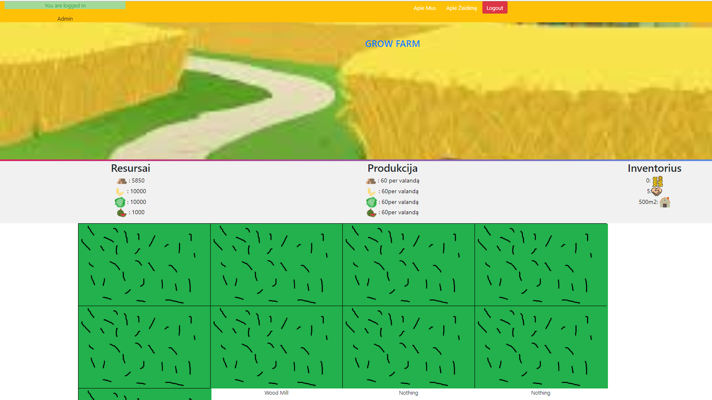
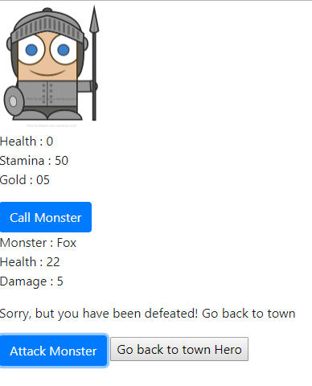

Welcome to my Portfolio
GrowFarm Project
This is my very first project at all. It very familiar game to Travian but this version is way more simpler and it's only about grow your farm and become biggest farm in the game. I learned how to use Php, MySQL to create register and login systems. Working with jQuery and Php I learned how to work with data from DB and make as part of game. Also I learned what is Cronjobs and so on. Its not finished project, there is still tons of work to do. I will continou with this project after I will get more skills with Php and jQuery

JavaScript practising project
This is my second aside project to practice JavaScript. Nothing fancy so far but I made huge progress from a + b to some game logics with objects and using localStorage and this bag of knoweledge is growing everyday

Hello I am Ernestas Luza or just Ernest. I am web and game developer. My experience in programming is 3 months from now. This is all my skill tools:
- JavaScript
- Php
- C#(I haven't used it for a long time so I would need to review it.
And of course like every programer I'm using some frameworks :
- Bootstrap
- jQuery
- Vue
- Laravel
Almost forgot to mention...Hypertext Markup Languages:
- HTML5
- CSS3
And last but not the worst, database managment system skills with:
- MySQL
Some skills related with Game development :
- Unity 3d engine